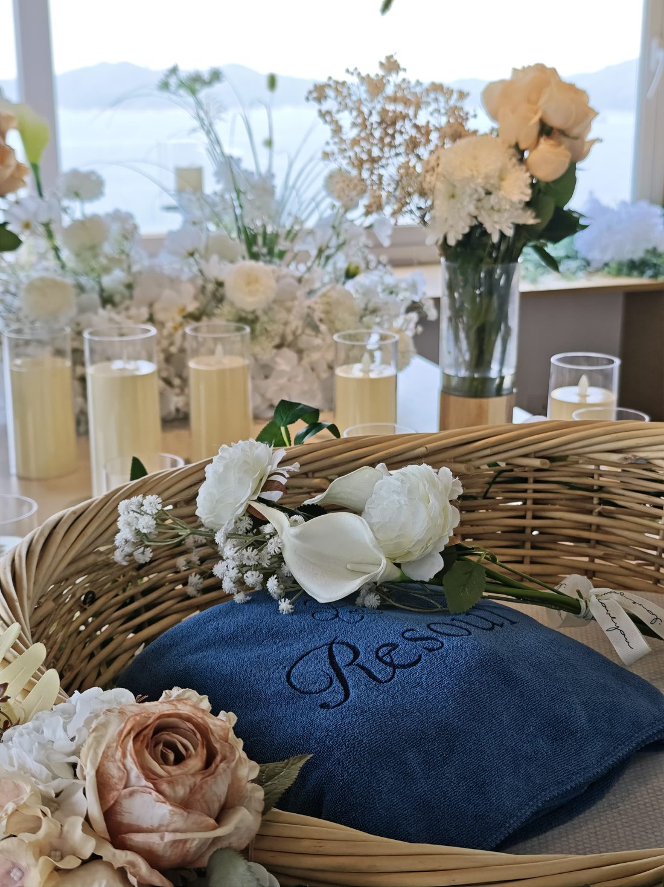
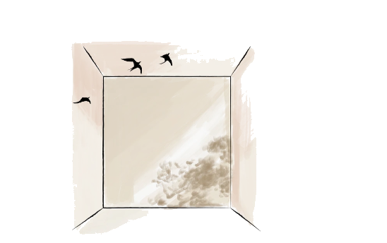
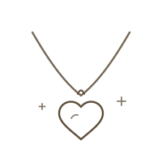
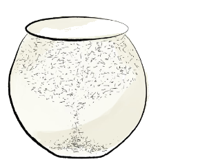

關於 RESOUL・香港寵物善終品牌
關於 RESOUL
每一次說再見，
都充滿愛、尊重和意義。
Where every goodbye is filled with love, dignity, and meaning.
我們的創辦人——一個充滿熱誠的 90 後女生，在一年內接連失去了三隻心愛的毛孩。每一場告別都讓她心痛，也讓她看清一個事實：很多寵物告別儀式感覺冷冰冰、匆匆忙忙，沒什麼溫度，留下的只有遺憾，而不是美好的回憶。
因為這份感觸，她創立了 RESOUL——一個讓告別變得溫暖的避風港。在這裡，每一場儀式都用心打造，專屬於你和毛孩的故事，溫柔又充滿尊重，讓每隻寵物的獨特回憶被好好珍藏，而不是被遺忘。我們用現代的方式紀念、用貼心的服務，讓愛與溫暖成為每一場告別的核心。

珍惜每段故事，溫暖每顆心
在我們這裡，說再見不等於結束，而是對你和毛孩共同時光的永恆紀念。當你想起你的寶貝，願你會心微笑，而不是感到愧疚和悲傷。讓我們一起，為每段動人的故事，畫下溫馨的句點。
「屬於你們的緣份，永遠都在。」
24/7 全天候守護接送
無論晝夜，悉心將摯愛寵物接送回家。

用心呵護的專業美容
為愛寵做最後的梳洗打扮，讓牠優雅告別。

私密舒適的安息空間
恬靜小屋，讓摯愛在溫柔環境中安眠。

專屬紀念精品
手工打造，讓愛與回憶永存心間。

細膩寵愛的火化服務
尊重一路同行，以精緻骨灰罐珍藏回憶。

專屬海景告別儀式
海景房內舉辦儀式，莊嚴卻充滿溫暖。

服務概覽
一個聯絡點，
銜接不同階段的專業支援。
不同服務由相應的專業人士獨立負責，而 RESOUL 協助主人預先整理時間、流程與下一步，減少重複聯絡和臨時作決定的壓力。每項服務可以互相銜接，也可以按需要獨立選擇。
決定前 · 獨立註冊獸醫轉介
協助整理毛孩資料、查詢檔期及銜接安排；醫療評估及程序由獨立註冊獸醫負責。
告別時 · RESOUL 善終旅程
私人接送、抵達通知、告別儀式、個別火化、骨灰及紀念安排。
離別後 · 悲傷關懷
24 至 48 小時關懷、實用指南、分享空間、同路人支援及專業心理服務轉介。
信任承諾
每一步清楚交代，
讓你不用再猜下一步。
專屬旅程
一爐一寵，永遠如此。我們認為每一個靈魂都值得尊重與獨享的空間，因此從不提供集體火化。我們承諾為你的寶貝點燃只屬於牠的火光，讓牠在陪伴下溫暖地完成這趟旅程。
零失誤
每一步，我們都會追蹤、拍照、錄影，並為你提供 24 小時專屬雲端檔案夾，讓寶貝的旅程——由抵達到完結——完全公開、透明、清晰。對你而言，這不是程序，而是永遠的放心，一絲混淆也不允許。
每一次告別，都溫暖一隻流浪小動物
我們與守護小動物的人並肩同行。每一次服務，都會資助動物慈善團體，為流浪動物提供有尊嚴的火化。讓你的寶貝以這趟旅程，照亮另一個小生命，把離別變成永恆的擁抱。
創辦人 Vivian Chong 與 RESOUL 團隊，連同受訓司機及合作專業人士，一起守護每一段旅程。每位獸醫及心理支援夥伴只使用已核實的姓名、資格與註冊狀況；醫療與心理服務由相應專業人士獨立負責。